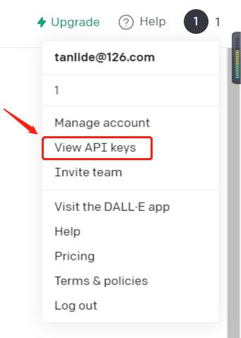

ps: 我也是网上找的一堆教程，但由于 gpt 版本迭代有点快，所以最后凑出来一个能跑的，根据“程序员第一法则”，也就没继续管他
ps2: 由于 gpt-3.5 （也就是现在的 chatgpt）的费用有点小贵（虽然有免费但有限）所以采用了 gpt-3 ，也就是 text-davinci-003
步骤
声明：以下只是本人 2023 年 1 月的注册全过程，并不保证成功性
- 首先得有个openai的账号（官网：https://platform.openai.com）
- tip:注册时需要海外手机，步骤：
- https://sms-activate.org/cn/getNumber
- 注册
- 在左侧服务搜索中输入
OpenAI，然后选择马来西亚（当然印度尼西亚最便宜，但有一定概率收不到，也就是钱打水漂）（当然所有的都不贵，马来西亚的连 1 美金都不到） - 获取激活电话号码，等到openai官网发送验证码时在此网站上接收验证码即可
- 完成openai账号注册
- ps：这个网站上也有一个教程，看了看感觉还不错 $\rightarrow$ https://sms-activate.org/cn/info/ChatGPT
- tip:注册时需要海外手机，步骤：
- 其次获取 openai 账号的 api-key，在登录后的这

然后直接Create new secret key，在弹出的框中复制那一串东西（不复制就没了！）（当然这个create是不限次数的）（最好是在桌面新建个txt然后存进去保存） - 然后创个服务器，我用的是硅云（这个是我知道的最便宜的香港云了，其他内陆得云现在访问不了openai了，也就是被墙了），10元1个月（学生优惠，链接：https://www.vpsor.cn/ac/campus），只能优惠一次，我买了一年120元（当然不想部署的本地跑跑试试新也行）
- 本地连上服务器，然后执行然后填充配置文件，配置说明：
1
2
3
4
5
6
7
8
9
10
11$ sudo apt-get update
$ sudo apt-get install git
$ sudo apt-get install golang
# 获取项目
$ git clone https://github.com/ZYallers/chatgpt_wechat_robot
# 进入项目目录
$ cd chatgpt_wechat_robot
# 复制配置文件
$ cp config.dev.json config.json
# 打开config.json
$ vi config.json1
2
3
4
5
6
7
8
9
10{
"api_key": "your api key", # openai账号里设置的api_key
"auto_pass": true, # 是否自动通过好友添加
"session_timeout": 60, # 会话超时时间，默认60秒，单位秒，在会话时间内所有发送给机器人的信息会作为上下文
"max_tokens": 1024, # GPT响应字符数，最大2048，默认值512。会影响接口响应速度，字符越大响应越慢
"model": "text-davinci-003", # GPT选用模型，默认text-davinci-003，具体选项参考官网训练场
"temperature": 1, # GPT热度，0到1，默认0.9，数字越大创造力越强，但更偏离训练事实，越低越接近训练事实
"reply_prefix": "来自机器人回复：", # 私聊回复前缀
"session_clear_token": "清空会话" # 会话清空口令，默认`下一个问题`
}1
2# 启动项目
$ go run main.go - 此时会有一个网址，复制到浏览器打开是二维码，用已实名认证的微信小号扫码登录（会有第一次登陆危险提醒，点确认就行），然后这个微信号就不能退出或换号（我个人平板是小号常登，所以刚好适配）
- 此时其他微信发给这个微信的所有消息（群聊消息除外）都会接入 gpt 接口并且自动给出回复，亲测可用且实用
- over
by Tan